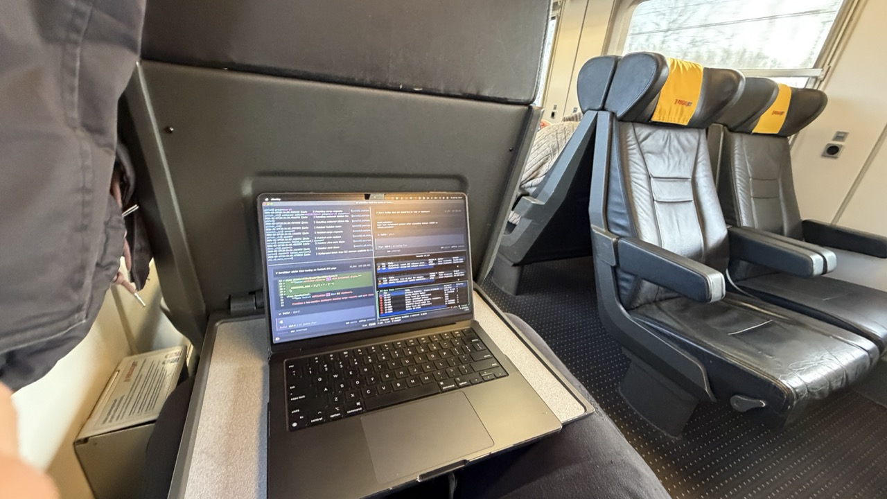
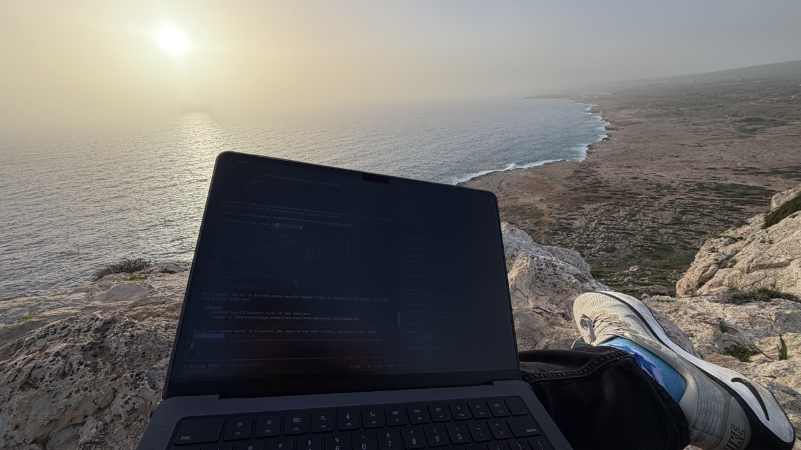
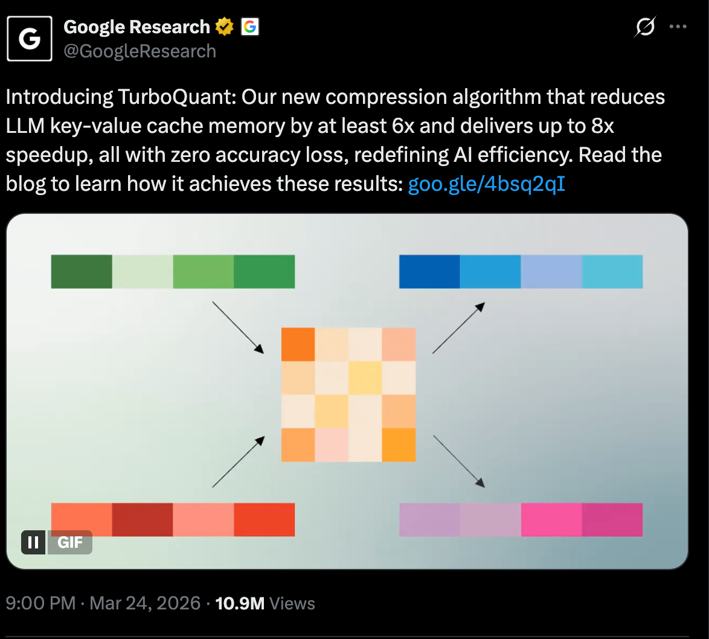

Pykonik Tech Talks #82
·
26 March 2026
·
Local Coding with LLMs
--- # local coding with llms <div class="title-gap"></div> how i spent 16*n hours prepping a local llm and ai agent for 1 hour of offline work. --- ## can you code without internet? (raise your hand if you can) <div class="question-gap"></div> <div class="fragment"> <h2>can you code without llm/ai agent?</h2> <p>(raise your hand if you can)</p> </div> --- ## where internet can be an issue? <div class="places-layout"> <div class="fragment"> <ul> <li>airplane</li> <li>train</li> <li>underground transit</li> <li>forest / nature</li> <li>border crossings and roaming dead zones</li> <li>all other places without internet</li> </ul> </div> <div class="places-gallery fragment"> <figure> <p></p> </figure> <figure> <p></p> </figure> </div> </div> --- ## why keeping my code private is good? - protects customer and company data - if leaked, competitors might copy my mistakes - **because it is**. --- # tooling --- ## my hardware - macbook m3 pro 14 - 36 GB of unified memory - enough local storage for multiple models --- ## tools for running models <div class="tools-compare"> <span class="fragment tools-focus-trigger" aria-hidden="true"></span> <table> <thead> <tr> <th class="ollama-col">ollama</th> <th class="lmstudio-col">lm studio</th> </tr> </thead> <tbody> <tr> <td class="ollama-col">• best for terminal-first developers.<br>• quick setup, low overhead, easy scripting.<br>• great when you want local models inside your coding workflow.</td> <td class="lmstudio-col">• best for people who want a friendly UI first.<br>• discover/download models without memorizing commands.<br>• great for trying models fast, then using cli/api when needed.</td> </tr> </tbody> </table> </div> --- ## model formats MLX = Metal Language Acceleration. GGUF = GPT-Generated Unified Format. <aside class="notes"> MLX is Apple's format/runtime path for Apple Silicon, optimized for Metal and usually best on Mac. GGUF is a portable llama.cpp ecosystem format with quantization + metadata, widely available across platforms. Use MLX when you are all-in on Mac performance; use GGUF for portability and broad tooling support. </aside> <div class="formats-compare"> <span class="fragment formats-focus-trigger" aria-hidden="true"></span> <table> <thead> <tr> <th class="mlx-col">MLX</th> <th class="gguf-col">GGUF</th> </tr> </thead> <tbody> <tr> <td class="mlx-col">• Apple Silicon optimized.<br>• faster on M1/M2/M3.<br>• native Metal GPU.</td> <td class="gguf-col">• universal.<br>• flexible quantization.<br>• llama.cpp ecosystem.</td> </tr> </tbody> </table> </div> ------ <div class="fragment"> general recommendation: • macbook: MLX; • others: GGUF. </div> --- ## what model to use? good candidates today: - Codestral - Devstral - Nemotron - gpt-oss - Bielik - Qwen 3.5 - Qwen 2.5-Coder - Llama 3.3 --- ## what local model i use? <div class="fragment"> **Qwen 3.5 variants** <div class="models-compare"> <span class="fragment models-focus-trigger" aria-hidden="true"></span> | | **9B** | **27B** | |---|---|---| | <span class="models-label">Parameters</span> | <span class="model9-col">9 billion *(faster for me)*</span> | <span class="model27-col">27 billion *(better for complex reasoning/refactors, but much slower for me)*</span> | | <span class="models-label">RAM</span> | <span class="model9-col">~=8GB</span> | <span class="model27-col">~=22GB</span> | | <span class="models-label">MLX</span> | <span class="model9-col">`mlx-community/Qwen3.5-9B-4bit`</span> | <span class="model27-col">`mlx-community/Qwen3.5-27B-4bit`</span> | </div> Alibaba Qwen team, SWE-bench: 72.4%, GGUF + MLX. --- ## my agents/harnesses history github copilot, claude code, gemini cli, codex, amp, opencode <div class="fragment"> <div class="agents-compare"> <span class="fragment agents-focus-trigger" aria-hidden="true"></span> <table> <thead> <tr> <th class="droid-col">droid from factory.ai</th> <th class="pi-col">pi from Mario Zechner</th> </tr> </thead> <tbody> <tr> <td class="droid-col">Factory AI<br>best tooling, really best<br>IDE + terminal integration<br>closed-source</td> <td class="pi-col">used in openclaw<br>minimalist harness<br>skills and extensions ecosystem<br>open-source</td> </tr> </tbody> </table> </div> </div> --- ## how i work no: "build me an entire app in one shot" yes: "specific, small features" tdd-ish approach tests first, then code collect knowledge when online, use it when offline context management is key --- ## skills/extensions for agents - `qmd` is great for building and searching my offline skills knowledge base (`~/.agents/knowledge`). - `collaborative-tdd` skill for structured test-first work. - `rtk` extension compresses CLI output before it reaches the agent, reducing token usage and keeping context cleaner. --- ## summary - LM Studio + Qwen 3.5 9B + Qwen 3.5 27B - pi (sometimes also droid) = main agent - tdd + small tasks - skills - offline? not a (big) problem. <h1 class=" fragment" style="margin-top: 1em" data-fragment-index="1">let's try it now</h1> --- ## what will the future bring? <p></p> --- ## who to follow? - me! [@piotrgredowski](https://x.com/piotrgredowski) on twitter, github, linkedin, i'll try to do some follow up on this topic - [@0xSero](https://x.com/0xSero), guy is doing amazing work on local llm agents, and is generally a great source of knowledge about local llms. - [@mitsuhiko](https://x.com/mitsuhiko), also gathers sometimes knowledge about local llms, and is generally a great source of knowledge about ai/agentic coding itself --- ## in general - is it worth to play with it? <div class="video-embed"> <iframe src="https://drive.google.com/file/d/1vJo2MndeHrBgDrFjphuc9ASPjBd5lfwx/preview" width="960" height="540" allow="autoplay" allowfullscreen title="Google Drive demo video" ></iframe> </div> --- ## links from this talk <div class="columns links-columns"> <div> - [Ollama](https://ollama.com) - [LM Studio](https://lmstudio.ai) - [MLX (Apple)](https://github.com/ml-explore/mlx) - [llama.cpp / GGUF ecosystem](https://github.com/ggml-org/llama.cpp) - [Qwen models](https://huggingface.co/Qwen) - [Factory / Droid](https://factory.ai) - [OpenClaw docs](https://docs.openclaw.ai) - [QMD](https://github.com/tobi/qmd) - [RTK](https://github.com/rtk-ai/rtk) </div> <div class="thanks-panel"> <h2>thanks!</h2> <p>questions?</p> </div> </div>